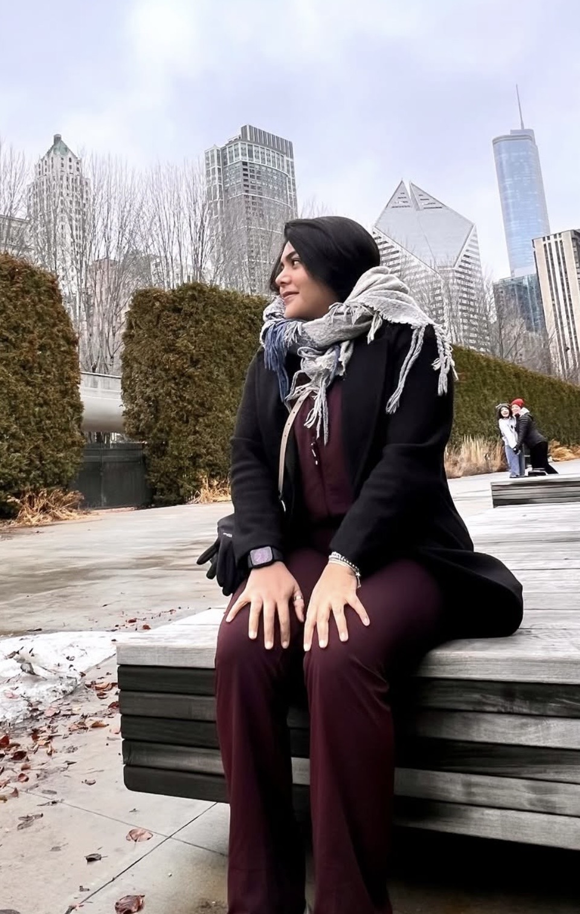

Giselle
Hay algo que quería enseñarte… pero creo que es mejor descubrirlo poco a poco.
Abrir →Y aunque ha pasado poco tiempo, hay algo que me resulta curioso…
Descubrir →
Como si ya te conociera.
No tenemos una historia enorme detrás. Apenas estamos empezando. Pero desde nuestras primeras conversaciones todo se sintió demasiado natural.
Como si simplemente hubiéramos coincidido en el momento correcto.
Seguir →Me gusta conocerte.
Esta me hizo pensar en ti.
No porque ya tengamos una historia de años… sino porque quizá algunas canciones llegan justo cuando empieza una historia que todavía no sabemos hasta dónde llegará.
Y eso es precisamente lo bonito.
Escuchar ♪ Última parte →Esto apenas comienza.
Todavía no tenemos cientos de fotos, ni años de recuerdos, ni una historia que contar completa.
Tenemos algo mucho más sencillo:
12 de septiembre.
Y quién sabe… quizá algún día volvamos a esta página y nos dé risa pensar que todo empezó con un QR.
Lo mejor de esta historia todavía no está escrito.